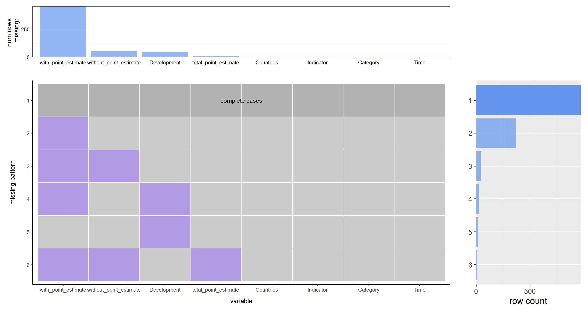

Chapter 3 Data
3.1 Sources
Our group checked many websites to decide which topic to focus on. Between education and healthy food, we chose children’s education as our topic and visited UNICEF’s authentical website for a confidential dataset. There are many datasets on that website, and the dataset of children’s education with or without disabilities interests us the most. It’s not only an interesting but meaningful topic.
UNICEF maintains the dataset. The UNICEF Global databases contain a set of 202 countries as reported through the State of the World’s Children Statistical Annex 2017. However, in this dataset, only 32 countries are presented. The data is well-organized in an excel file.
The data was collected from the 6th round of the Multiple Indicator Cluster Survey (MICS6). There are ten sheets in this dataset that provide information on four education indicators (Adjusted net attendance rate (ANAR), Out of school rate (OOR), Completion rate, and foundational learning skills) supporting national education monitoring for children with and without disabilities in 32 countries and areas. The dataset considers three levels of education for two indicators: ANAR Primary, ANAR Lower Secondary, ANAR Upper Secondary, OOSR Primary, OOSR Lower Secondary, and OOSR Upper Secondary. The Completion rate is recorded on the primary level only. Foundational learning skills consist of foundational reading and numeracy skills, recorded for children aged 7 to 14.
Indicator Definition:
1. ANAR: Percentage of children of a given age that are attending an education level compatible with their age or attending a higher education level.
2. OOSR: Percentage of children or young people in the official age range for a given level of education who are not attending either pre-primary, primary, secondary, or higher levels of education.
3. Completion Rate: Percentage of cohort of children or young people three to five years older than the intended age for the last grade of each level of education (primary, lower secondary, or upper secondary) who have completed that level of education. Only the primary level is presented.
4. Foundational Learning Skills: Percentage of children achieving minimum proficiency in (i) reading and (ii) numeracy. If the child succeeds in 1) word recognition, 2) literal questions, and 3) inferential questions, s/he is considered to have foundational reading skills. If the child succeeds in 1) number reading, 2) number discrimination, 3) addition, and 4) pattern recognition, s/he is considered to have foundational numeracy skills.
For all the 9 tables in the collected excel from UNICEF, the table headers are all the same. There are 18 variables in total, which are all characters. Since not all the variables are useful, we removed some columns during the data process, such as “Data source,” “Upper limit” and “Lower limit.” We also merged the 9 sheets into a big data frame with 1440 records. And all the point estimates’ units are the percentage. The dataset also has several practical issues. First, the method of how the data is collected can not promise precision. The data for different countries and areas are estimated by point estimating, so there is a gap between the estimated value and the real value. Second, the sample sizes for those countries and areas are unknown. Third, the years in which the data collection took place differ for different countries and areas, and the period format is also different. For example, some are “yyyy-yyyy”, such as “2017-2018,” while some are “yyyy”, such as “2017”. Fourth, there are many missing values for children with functional difficulties. Unfortunately, considering the values for different countries are limited and unrelated, it is difficult to impute by mean value or other methods.
Due to these problems, we did further data cleaning based on this big data frame.
3.2 Cleaning / transformation
- Integrate all sheets into one data frame: Use the “readxl” package to read the 9 tables separately. All nine tables have the same table header; hence, directly use “rbind” to integrate all the data frames into a whole data frame.
- Remove unnecessary columns: Remove seven columns that are unrelated to our project aim or might not be useful when drawing figures, such as “lower limit,” “upper limit,” and “data source.”
- Rename the columns: Rename the columns with simple and clear labels.
- Normalize the Time and Development: For the column “Time”, there are columns in the format like “yyyy-yyyy”; we use the beginning year for this time to replace it. For example, we use 2017 to replace “2017-2018”. For the column “Development,” we capitalize the first letter of all words.
- Change variable type: Convert the point estimate into numeric data type by “as.numeric.” Since we will use Time as a category, we are not going to convert the data type.
- Convert to tidy data: The point estimate for children with and without functional difficulties are presented in two columns. However, since they are one variable, we use pivot_longer to convert it into a tidy version.
- Deal with missing values: According to the analysis of missing values in 3.3, we decide to delete the rows with missing values in columns “total_point_estimate,” “with_point_estimate,” “without_point_estimate,” and “Development”
3.3 Missing value analysis
We first look at the missing value for each column:
## Countries Indicator Category Time total_point_estimate Development
## 970 1 1 1 1 1 1
## 372 1 1 1 1 1 1
## 43 1 1 1 1 1 1
## 15 1 1 1 1 1 0
## 30 1 1 1 1 1 0
## 10 1 1 1 1 0 1
## 0 0 0 0 10 45
## without_point_estimate with_point_estimate
## 970 1 1 0
## 372 1 0 1
## 43 0 0 2
## 15 1 1 1
## 30 1 0 2
## 10 0 0 3
## 53 455 563The matrix returned with entry value missing = 0 and observed = 1 shows the total number of missing rows for each pattern. The last row represent the number of missing rows of each variable. We can see that the “without_point_estimate” and “with_point_estimate” has the most missing values, especially “with_point_estimate”, counts to 455, up to 65% of the whole missing values numbers (698).
Then, we use the redav package to explore the missing pattern:

From the top bar chart, we can see that missing values in variable “with_point_estimate” is much higher than other variables. For missing values, “with_point_estimate” and “without_point_estimate” rank second and third. From the two bottom graphs, it is easy to conclude that the most frequent missing pattern is only missing “with_point_estimate” variables. Considering “total_point_estimate”, “with_point_estimate”, “without_point_estimate”, and “Development” we deleted rows with missing values in these columns.